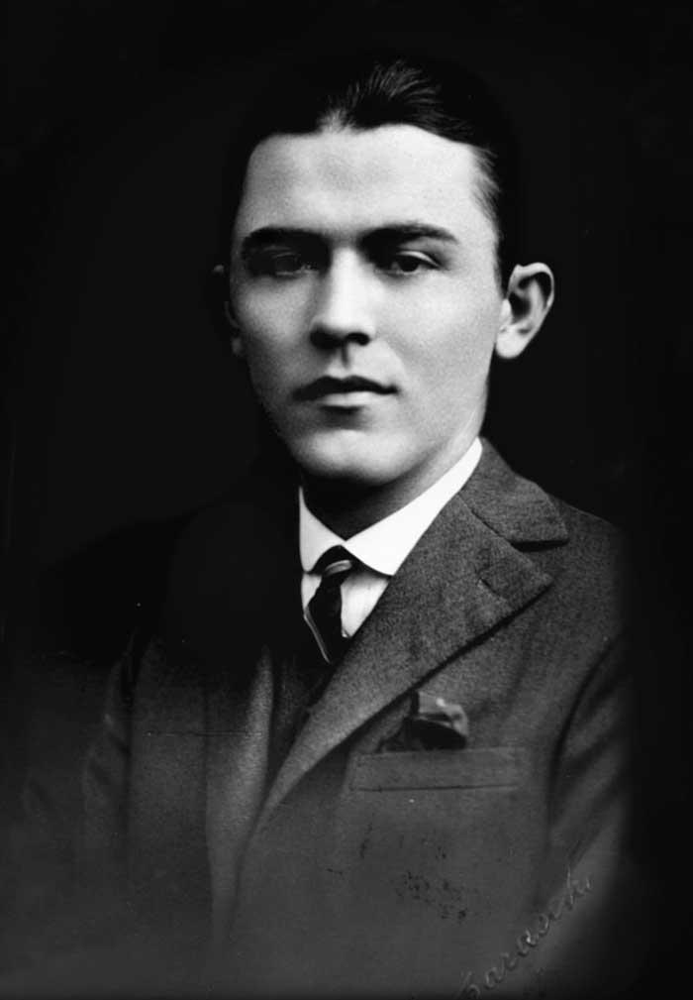

27 Pasi - Tibi Ușeriu
Autobiografia lui Tibi Ușeriu este prima carte care îmi răsare în minte și pe care o găsesc pe vârful limbii când sunt întrebată de cartea mea preferată. Poate că am citit-o la vârsta eternă de șaisprezece ani sau poate pentru că în acel moment ea a devenit mica mea călăuză, cartea m-a marcat.
Am furat-o de la mama. Ea, la randul ei, o avea împrumutată de la una din colegele ei de lucru. Am citit-o înaintea mamei. Am mâncat cele 214 pagini într-o singură zi. Am vărsat prima lacrimă când mi-am dat seama că nu o pot păstra, și o a doua, când nu am gasit-o în nici o librărie din Chișinău la vremea respectivă. Am înnebunit toată lumea cu cartea asta, până când, verișoara mea, pasionată și ea de o carte buna, mi-a luat-o din Iași.
Este descrisă, în prim plan, călătoria lui Tibi Useriu la cursa 6633 Arctic Ultra, împreuna cu demonii și amintirile vieților sale paralele ce îl însoțesc. O poveste aproape ireală, dar care inspiră. Un umor fin, de un românesc elegant, cartea îți dă impresia că stai la o cafea într-o dimineață cu un prieten care îți descrie cel mai lunatic vis al său. Și apoi, exact în momentul în care crezi că își bate joc de tine și istoriile sunt pură imaginație, te regăsești în micile victorii, simți acele frici care îți pătrund în oase și râzi împreuna cu el...
M-am îndrăgostit de această carte pentru că m-a ajutat să fiu curajoasă, încăpățânată, să îmi asum greșelile și să continui indiferent de orice. La acei șaisprezece ani ai mei în care eram pusă în fața primei alegeri de făcut legat de viitorul meu, presiunea a devenit mai mică. Un profil sau o facultate nu trebuie să te definească. În cel mai rău caz, te alegi cu o lecție a naibii de bună. Trebuia sa îmi zică cineva, în acel moment, asta. Pentru aceasta lecție, mersi.
Invitație la vals - Mihail Drumeș
Cartea lui Mihail Drumeș  , mi-a dăruit o contradicție de emoții. Ultimile 10 pagini au fost citite plângând în hohote, umezind fiecare alineat. După isteria de plâns, am simțit o confuzie și o revoltă supărătoare. De ce opere atât de bune, mult mai actuale, scrise de un dramaturg român, nu sunt incluse în programa școlară? De ce nu sunt înlocuite romanele antice și depășite precum “Mara” de Ioan Slavici sau “Ion” de Liviu Rebreanu cu proză plăcută de elevi? Nu i-ar motiva pe aceștia să citească și mai mult?
Asta înseamnă o carte bună, nu? Una care să-ți trezească emoții, să te facă sa îți pui întrebări. O poveste de amor, fără vulgarități, de o sensibilitatea aparte. “De fapt, marile pasiuni rămân necunoscute, se consumă în anonimat.”(- M. Drumeș) Să ai posibilitatea să tragi cu ochiul, de după cortină, asupra unei astfel de experiențe fulgerătoare, autodistructivă, măcinătoare, pasională este un must. O astfel de lectură trebuie contemplată, analizată, pusă la dezbatere. Iubirea, în diferitele forme ale ei, este întalnită pretudindeni, de către toți. De ce nu s-ar învața la școală, prin exemple și anti exemple, cum să trăiești o iubire?
“Invitație la vals”, roman scris în perioada interbelică, dă un ritm amețitor ce fascinează cititorii de toate vârstele… Recomand, o literatură română, care chiar m-a captivat.
Mândrie și prejudecată - Jane Austen
Am citit “Mândrie și prejudecată” pentru că este considerată una din poveștile de dragoste epice. Fiind ecranizată, popularitatea i-a crescut și mai mult.
Romanul are ca temă principală orgoliul de clasă al personajului masculin - domnul Darcy și prejudecățile d-rei Elizabeth Bennet la adresa lui. Acțiunea conturează o tânără dezinvoltă, ușor ironică, inteligentă și spirituală care încearcă să-și înțeleagă sentimentele către tânărul pe care îl găsește antipatic la prima impresie. Între cei doi se naște o tensiune palpabilă într-o societate scandaloasă, aceasta fiind una din motivele pentru care cartea este atât de îndrăgită.
Eu și generația mea în particular, ne-am familiarizat cu adaptarea cinematografică a poveștii din 2005 cu Keira Knightley în rolul lui Elizabeth și Matthew Macfadyen în rolul lui Darcy. Această versiune, filmată integral în locații din Marea Britanie a fost nominalizată la Academy Awards.
În decembrie 2017, Netflix a anunțat că o persoană din Chile a vizionat filmul de 278 de ori pe parcursul anului. A fost raportat mai târziu că acea persoană era o femeie în vârstă de 51 de ani, care s-a autodeclarat obsedată de acest film și că o vede pe Elizabeth Bennet ca fiind un model feminist. Trebuie să recunosc, îi împart părerea cu aceeași obsesie.
-AE